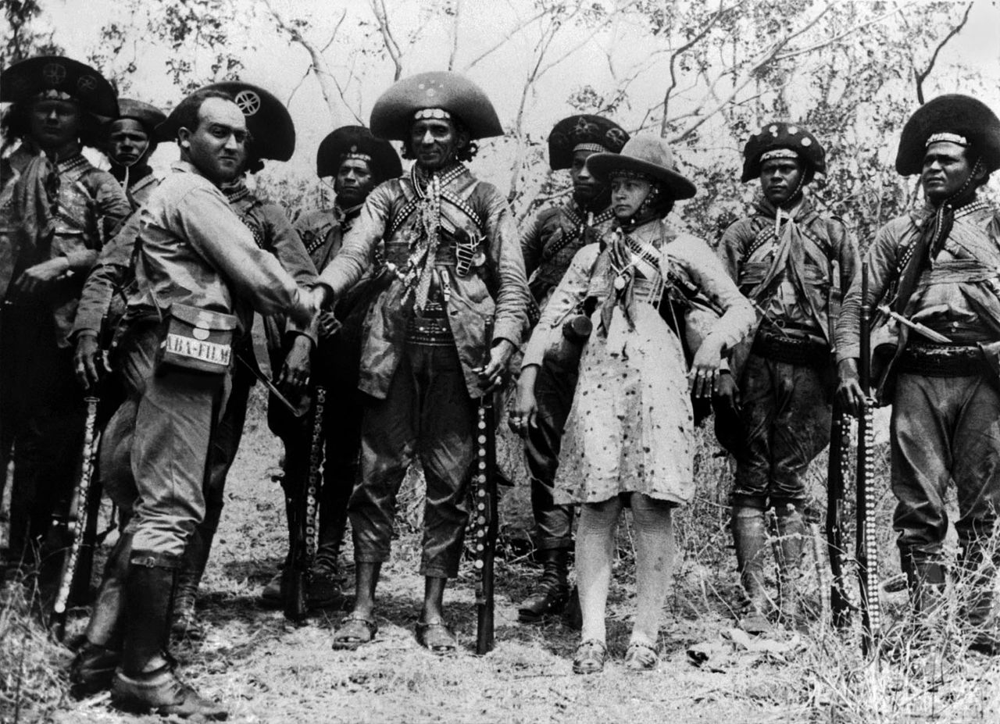
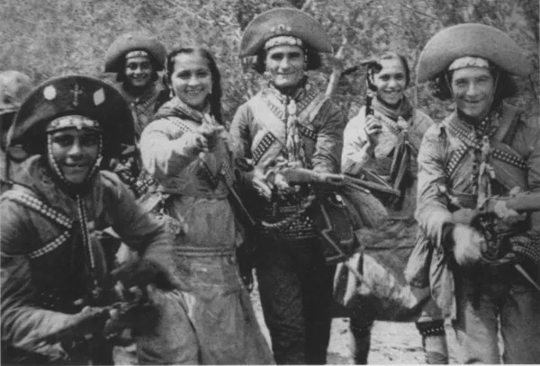

O que foi o Cangaço?
"O cangaço foi um movimento de banditismo ocorrido no final do século XIX e início do XX na região Nordeste do Brasil. Os bandos eram formados por habitantes da região semiárida nordestina que, organizados, praticavam diversos delitos, como roubo a cidades, sequestros, assassinatos e estupros. O movimento foi combatido violentamente pelo governo brasileiro da época."
Atuação dos cangaceiros no sertão
"O primeiro grupo cangaceiro se organizou por volta de 1828, liderado por Lucas Evangelista, que agiu na região de Feira de Santana (Bahia) até ser capturado e morto em 1848. O mais famoso desses grupos foi o liderado por Virgulino Ferreira, conhecido como Lampião, considerado o “rei do cangaço”, atuante entre as décadas de 1920 e 1930 em todos os estados do Nordeste. O último dos grupos cangaceiros foi o liderado por Corisco, também conhecido como “Diabo Louro”, ex-membro do grupo de Lampião, morto em 1940. O último membro do grupo de Lampião, no entanto, morreu com 97 anos de idade em 2014, seu nome era José Alves de Matos."